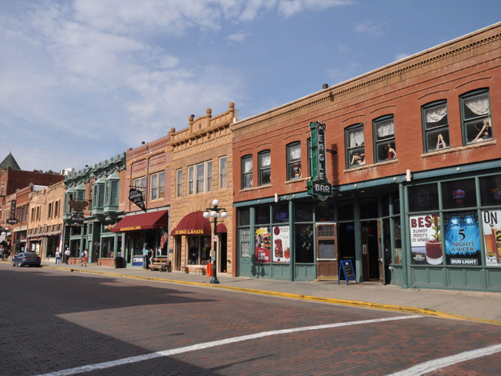

Historic community renowned for its Gold Rush heritage, preserved 19th-century architecture, gaming district, museums, and notable Old West landmarks.
General Information
How to Get There
From Deadwood Gulch Resort (about 1 mi): Follow US-85 Business and Sherman Street toward downtown, then continue to City Hall at 102 Sherman Street.
Overview
Deadwood, South Dakota, is a small historic town in the northern Black Hills, and it is one of the best-known Old West towns in the country. It was a rowdy gold rush camp in 1876, the place where Wild Bill Hickok was shot while playing poker, and the home of Calamity Jane, Seth Bullock, and other frontier figures. The entire city is a National Historic Landmark, and since the legalization of gambling in 1989, its historic main street has been lined with casinos, saloons, and shops.
Visitors come to Deadwood to walk its Main Street, to visit the graves of Wild Bill Hickok and Calamity Jane at Mount Moriah Cemetery, and to see the Days of '76 Museum. They also come for the casinos, for reenactments of the shooting of Wild Bill, for the HBO series Deadwood, and for the scenic Black Hills, with Spearfish Canyon, Mount Rushmore, and Sturgis nearby. It is a lively, family-friendly stop with a strong Western atmosphere.
History
Gold was discovered in Deadwood Gulch in 1875, and when the news spread in 1876, thousands of prospectors poured into the Black Hills, which had been guaranteed to the Lakota in the Treaty of Fort Laramie of 1868, and the town was founded illegally on Native land. The town became known for gambling, saloons, and lawlessness, and on August 2, 1876, Wild Bill Hickok was shot in the back of the head by Jack McCall while holding a hand of aces and eights, now called the "dead man's hand." A fire in 1879 destroyed much of the town, and it was rebuilt in brick, and the Homestake Mine in nearby Lead operated as one of the largest gold mines in the Western Hemisphere until 2002. In 1989, gambling was legalized to fund historic preservation, and the town's casinos have funded restoration work ever since.
Sightseeing and Popular Landmarks
Main Street is the center of Deadwood and features restored brick buildings, casinos, and saloons such as Saloon No. 10, where Hickok was killed and where the shooting is reenacted daily in summer. Mount Moriah Cemetery, on a hillside above the town, is the burial place of Hickok, Calamity Jane, and Seth Bullock, and it has views of the town. The Adams Museum and House, the Broken Boot Gold Mine, and the Historic Deadwood Trolley are other sights, and Tatanka: Story of the Bison, a Kevin Costner attraction with a sculpture of bison and buffalo hunters, is nearby.
Culture and Museums
The Days of '76 Museum has a large collection of Old West artifacts, stagecoaches, and wagons, and honors the Days of '76 rodeo and parade held each summer. The Adams Museum, the oldest museum in the Black Hills, has exhibits on the gold rush and local history, and the Deadwood History Center has archives and photographs. The Midnight Star, a casino owned by Kevin Costner, has movie memorabilia, and the Deadwood Alive reenactments bring the town's history to life.
Parks
Deadwood is surrounded by the Black Hills National Forest. The George S. Mickelson Trail, a 109-mile rail trail, passes through the area and is popular for biking and walking, and Spearfish Canyon Scenic Byway, about 15 miles away, has waterfalls and cliffs. Roughlock Falls, Bridal Veil Falls, and Sturgis' Bear Butte are other nearby outdoor attractions, and Whitewood Creek runs through town.
Seasons and Weather
Deadwood has a semi-arid continental climate with warm summers and cold winters. Summer highs are in the 80s°F and winter highs in the 30s°F, with about 70 inches of snow in the hills. Summer is the busiest season, especially during the Sturgis Motorcycle Rally in August, and fall is a good time for color in the hills. Winters are quieter, and some attractions have reduced hours.
This article uses material from Wikipedia as well as information from official tourism and institutional sources. Key references include Deadwood Chamber of Commerce, Travel South Dakota, Days of '76 Museum, Adams Museum, National Park Service National Historic Landmarks, and National Weather Service Rapid City. Wikipedia material is from the articles "Deadwood, South Dakota" and "Wild Bill Hickok", and is available under the Creative Commons Attribution-Share-Alike License 3.0.
